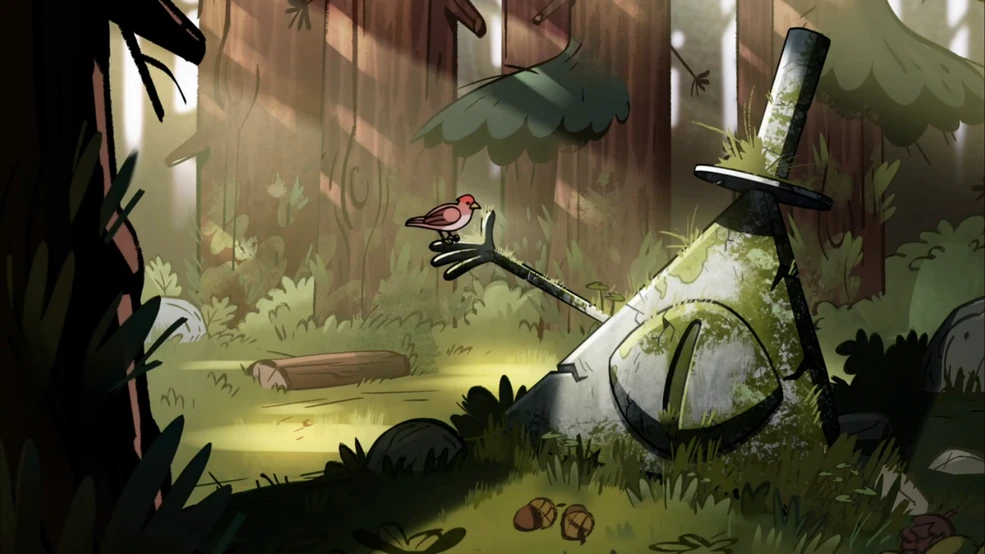

Statue de Bill

Cette statue est une des seules manifestations dans le monde physique de l'entité connue sous le nom de Bill Cypher.
Bill est une créature d'une autre dimension prenant l'apparence d'un triangle jaune avec un seul oeil et un
fort élégant chapeau haut-de-forme. Il se présente dans les rêves des humains pour tenter de les truquer, agissant
comme un démon qui promet des merveilles, mais qui finit par trahir quiconque lui fait confiance.
Cette statue abandonnée ajoute au mystère du personnage. Qui a construit cette statue, et dans quel but? Bill
se trouve-t-il encore quelque part dans notre monde? Est-ce qu'une surprise miraculeuse aura lieu si on laisse
de l'argent près de la statue sans surveillance? Il n'y a qu'une façon de le savoir!
Matériaux: Pierre, cauchemars, lichen.
Voici une liste non-exhaustive des gens que Bill a manipulé, en ordre chronologique:
- Stanford Pines
- Gideon Gleeful
- Dipper Pines
- Mabel Pines
Trou sans fond

Les trous, de par leur nature sombre et mystérieuse, dégagent une énergie qui fascine. Les philosophes ont même écrit sur le fait de regarder dans l'abysse. Mais aucun trou que vous ayez jamais vu recèle d'autant de secrets et d'incompréhensible que celui-ci, car il n'a pas de fond! Certains diront que c'est impossible, qu'il doit mener à l'autre bord de la Terre, ou qu'il est simplement inexplorable, mais nous affirmons haut et fort, avec la certitude inébranlable qui vient d'y être allé nous-mêmes, que ce trou ne possède aucun fond. Nous vous invitons à le tester pour vous-mêmes...
Matériaux: Le vide, le rien, l'abysse, l'absence, le silence, le gouffre, le néant.
Voici une liste de choses qui ont été jetées dans le trou:
- Des preuves des crimes de Stanley
- Des souvenirs de crushs passés de Mabel
- Soos, le mécano
Arbre-pied

Imaginez-vous marcher paisiblement dans une forêt. Les oiseaux chantent, le soleil passe joyeusement à travers les feuilles. Les arbres semblent particulièrement vivantes,
presque amicales. Vous vous sentez les comprendre, les entendre, percevoir leur passé dans leurs formes anciennes et chaotique. Soudain, tout s'arrête. L'émerveillement
laisse place à la terreur. Pendant un instant, vous ne vivez plus. Votre esprit et votre corps ont disjoncté. L'amitié que vous sentiez émaner des arbres vous apparaît
à présent une malice abrutie. Devant vous:
Le Pied.
Matériaux: Bois, pied d'athlète.
Voici une liste non-exhaustive de symptômes qui ont été notés lors d'encontres avec le Pied:
- Perte de mémoire à court-terme
- Visions vives de scènes autobiographiques marquantes
- Désirs de donner ses pieds à la forêt
- Impression vive que ses pieds sont en bois